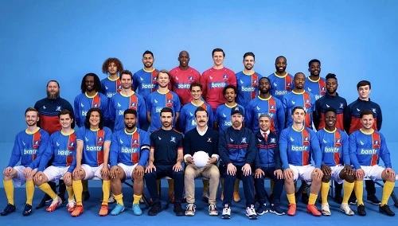

- Jamie Tartt
#9
CAM
| 5'10" | 185lbs
-
Roy Kent
#6
CDM
| 6'0" | 181lbs
- Dani Rojas
#14
ST
| 6'0" | 165lbs
- Sam Obisanya
#24
RM
| 6'1" | 170lbs
- Isaac McAdooEnglandIsaac McAdoo
#5
CB
| 6'0" | 196lbs
- George Goodman
#17
LB
| 5'11" | 154lbs
- Moe Bumbercatch
#21
CM
| 5'9" | 143lbs
- Colin Hughes
#12
LM
| 5'10" | 161lbs
- Ash Dixon
#2
RWB
| 5'7" | 159lbs
- Tanaka Roberts
#16
ST
| 5'10" | 181lbs
- Jan Maas
#13
CB
| 6'4" | 198lbs
- Richard Montlaur
#8
CDM
| 5'9" | 154lbs
- Joe Reynolds
#20
CB
| 6'3" | 192lbs
- Emmanuel Winchester
#4
CB
| 6'3" | 181lbs
- Thierry Zoreaux
#81
GK
| 6'2" | 190lbs
- Tom O’Brien
#1
GK
| 6'1" | 187lbs
- Ozzie Kukoč
#7
RM
| 5'9" | 135lbs
- Ugo Babatunde
#18
CB
| 6'1" | 209lbs
- Dejon Cockburn
#19
ST
| 5'10" | 174lbs
- Tom O’Brien
#1
GK
| 6'1" | 187lbs
- Dejon Cockburn
#19
ST
| 5'10" | 174lbs
- Ozzie Kukoč
#7
RM
| 5'9" | 135lbs
- Ugo Babatunde
#18
CB
| 6'1" | 209lbs